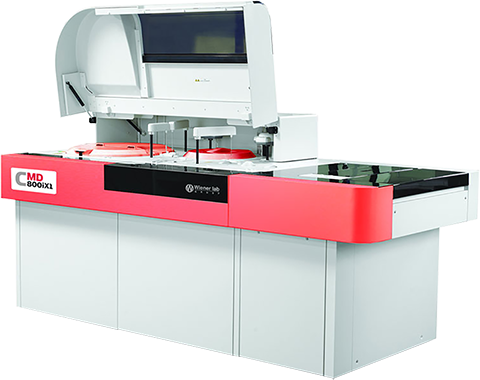

Wiener lab cmd 800
Analizador automatizado para química clínica

DESCRIPCIÓN:
Soluciones integrales para Química Clínica.
Analizador automatizado de acceso al azar (random access), “de piso”. Robusto y de uso amigable, software en español, para pruebas de Química Clínica y pruebas turbidimétricas de proteínas plasmáticas y reumáticas; módulo ISE. Software Ambiente Windows XP o vista.
Modelos disponibles: CMD 800/800i (800/1,200 pbas/h).
CMD 800 X2/800i X2 (1600/2,400 pbas/h).
CARACTERÍSTICAS:
Sistema de muestras:
140 posiciones incluyendo posiciones refrigeradas para calibradores y controles.
Lector de código de barras.
Tubos primarios (12 x 75 y 13 x 100 mm) o copas de muestra. Carga continua, pre-dilución de muestras. Sistema para detección de coágulo.
Volumen programable de 1.5-35 uL.
Sistema de pipeteo:
Brazo de reactivos termostatizado; lavado interno y externo de la aguja.
Sensor de nivel capacitivo y sensor de choque. Dilutor de válvula Klohen de 500 mL.
Bandeja de reacción:
165 cubetas de reacción (vidrio); Incubación por aire caliente (37°C +/- 0.1°C).
Incluye: Unidad para suministro de agua; PC, monitor plano, impresora, UPS (fuente de energía) y supresor de picos.
Registro: 0704E2013 SSA
DATOS COMPLEMENTARIOS: Para información adicional comunicarse a:
WIENER LAB.
REPRESENTACIONES LABIN MÉXICO, S. A. de C.V.
Teléfonos: (55) 5524-0771, 5200-2500
Lada sin costo: 01 800-581-4616
e-mail: contacto@wiener-mex.com
www.wiener-lab.com.ar